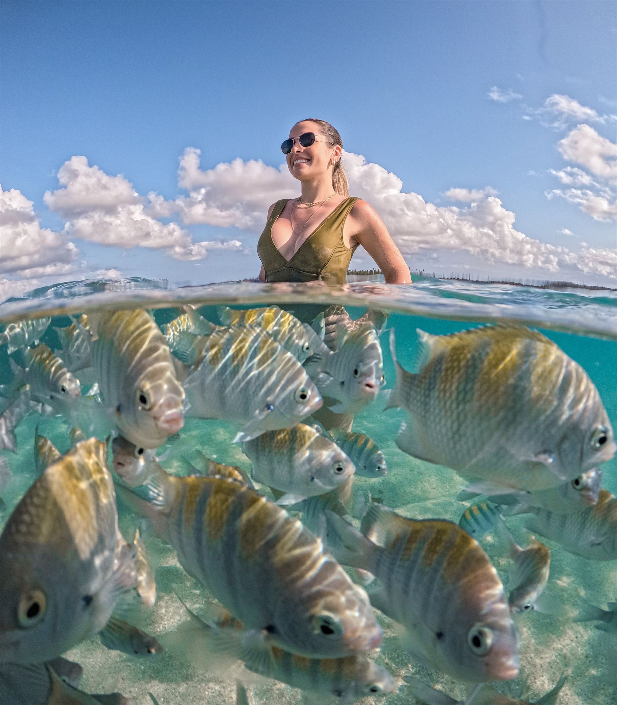
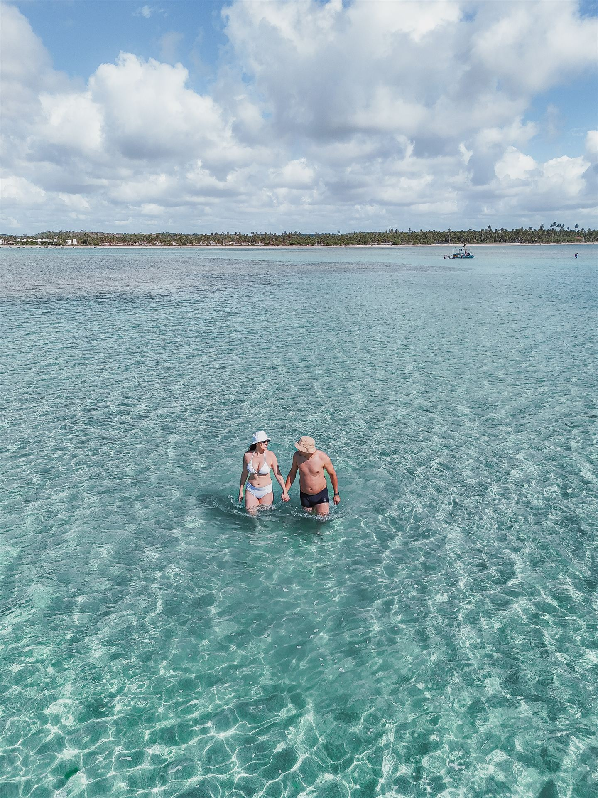
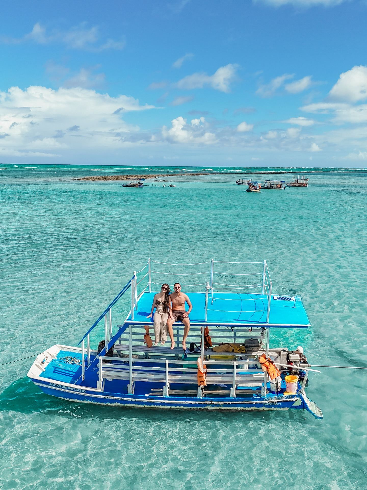
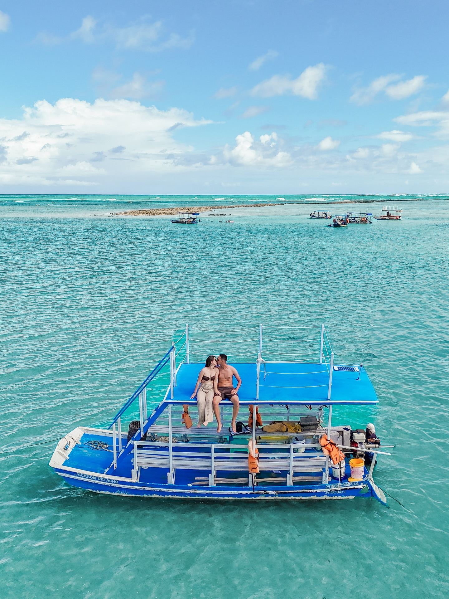

01 / O encontro com o marJangada · Piscinas naturaisEntre azuis
Entre azuis
e piscinas naturais.
Navegue de jangada, mergulhe entre os recifes e encontre os bancos de areia que a maré revela.
Planejar meu passeio
Sinta a verdadeira essência da Rota Ecológica dos Milagres. Navegue com o jangadeiro nativo Jackson pelas piscinas naturais mais límpidas e calmas do Brasil, deguste frutos do mar grelhados na maré baixa e tenha um transfer com pontualidade garantida.
Entre os recifes e a brisa, existe um Patacho que se conhece devagar. Venha descobrir com Jackson.

01 / O encontro com o marNavegue de jangada, mergulhe entre os recifes e encontre os bancos de areia que a maré revela.
Planejar meu passeio
02 / A assinatura do JacksonFrutos do mar na brasa, preparados por Jackson. Ao redor, água transparente e tempo para aproveitar.
Descobrir os sabores
03 / Um momento só seuUma jangada exclusiva para compartilhar o Patacho com quem você ama. Para celebrar ou apenas estar junto.
Consultar passeio privativoConverse diretamente com Jackson para alinhar a experiência, a disponibilidade e o melhor horário da maré.
Alinhamento de horários com o pico da maré baixa
Águas quentes e rasas cristalinas entre os recifes protegidos de Porto de Pedras.
Lagostas e camarões frescos preparados na hora na brasa da jangada pelo próprio Jackson.
Transfer com conforto e pontualidade saindo dos aeroportos de Maceió (MCZ) ou Recife (REC).
Máscaras para mergulho e paradas estratégicas nos melhores bancos de areia.
As piscinas naturais mais famosas do Brasil surgem na maré baixa. Veja como planejar sua visita no melhor horário!
A maré sobe e desce duas vezes ao dia. O momento dourado para entrar na jangada é entre 1h30 antes e 1h30 depois do pico da maré mínima (quando o mar recua até centenas de metros e revela os aquários naturais).
Piscinas extremamente rasas, água cristalina azul-turquesa e bancos de areia secos.
Ótima condição para mergulho livre, snorkel com peixes e navegação tranquila.
Níveis mais altos; Jackson ajusta o horário exato para encontrar o melhor ponto seguro.
Períodos com as marés mais baixas do mês — o momento em que a Praia do Patacho fica idêntica às fotos do Instagram!
Selecione a data em que você estará na Praia do Patacho:
Carregando previsão de maré para hoje...
Do primeiro contato no WhatsApp até a volta com a galeria do celular cheia de fotos incríveis.
Você manda mensagem no WhatsApp com as datas da sua estadia. Jackson consulta a tábua de marés da Marinha e indica o melhor dia e horário.
Nos encontramos na beira da Praia do Patacho (em frente às águas calmas) ou o Jackson coordena o transfer da sua pousada até o local.
Embarque seguro com coletes na jangada com sombreiro. Chegando nas piscinas, você mergulha com peixinhos e aproveita as boias para fotos.
Degustação de lagosta e frutos do mar preparados na brasa do mar, brinde com bebidas geladas e retorno com energia renovada!
Sem filtros de mentira: veja a água transparente, as jangadas e os viajantes vivendo o Patacho todos os dias!
Centenas de casais e famílias recomendam a experiência no Patacho.
Chegue à sua pousada na Rota Ecológica dos Milagres sem estresse. Oferecemos receptivo completo nos aeroportos de Maceió ou Recife direto para Patacho, Porto de Pedras e Milagres.
Tudo o que você precisa saber para aproveitar o melhor passeio de Alagoas.
Porque o passeio de jangada nas piscinas naturais depende exclusivamente da tábua de marés. Como o pico da maré baixa atrasa cerca de 30 a 50 minutos a cada dia, o horário de embarque é ajustado diariamente para que você pegue as águas mais rasas e cristalinas possíveis.
Com certeza! As jangadas são muito estáveis, o mar da Praia do Patacho é protegido pela barreira de recifes (sem ondas fortes durante a maré baixa) e dispomos de coletes salva-vidas adequados para todas as idades. É um passeio super seguro e tranquilo para toda a família.
Recomendamos levar: protetor solar, óculos de sol, chapéu ou boné, toalha, sapatilha aquática (se tiver, para caminhar sobre os recifes) e sua câmera ou celular com capinha à prova d’água. Se desejar, pode trazer suas próprias bebidas, pois disponibilizamos cooler com gelo a bordo.
O churrasco de lagosta e camarões precisa ser reservado com antecedência via WhatsApp, pois os frutos do mar são comprados fresquinhos direto dos pescadores nativos no dia do passeio, garantindo o sabor e a qualidade máxima.
Fazemos o receptivo particular tanto no Aeroporto Internacional Zumbi dos Palmares (Maceió) quanto no Aeroporto dos Guararapes (Recife) direto para a Praia do Patacho, Porto de Pedras, São Miguel dos Milagres e Japaratinga. Basta nos informar seu número de voo e horário de chegada.
Em Alagoas, as chuvas tropicais costumam ser passageiras e o sol logo volta a brilhar. Contudo, a segurança é prioridade absoluta. Caso haja ventos fortes ou condições marítimas inadequadas que comprometam a segurança, remarcamos para o dia seguinte ou cancelamos sem custo.